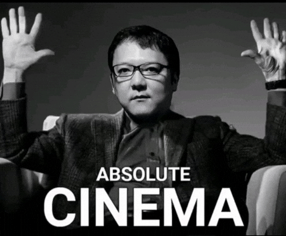
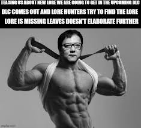

Who is the current President of Fromsoftware?
Hidetaka Miyazaki is a Japanese game designer best known for shaping modern action RPGs. Before joining the game industry, he studied social sciences and felt uncertain about his career path. His passion for fantasy novels and storytelling pushed him toward video games later in life.

Why was he so unique?
Miyazaki started as a planner and quickly stood out for his bold and unconventional ideas.
His breakthrough came when he directed Demon’s Souls, a risky project many doubted.
Instead of simplifying the game, he embraced difficulty and mystery.
This design philosophy encouraged players to learn through failure.
The game’s success redefined FromSoftware’s identity.

His biggest Achievements
Miyazaki went on to direct Dark Souls, which gained worldwide aclaim.
Through these games, he built a distinct style focused on atmosphere and subtle storytelling.
He later became president of FromSoftware, guiding its creative vision.
Under his leadership, the studio released titles like Bloodborne and Elden Ring.
Miyazaki did not create FromSoftware, but he transformed it completely.
Today, FromSoftware is synonymous with challenging, artistic, and influential games.